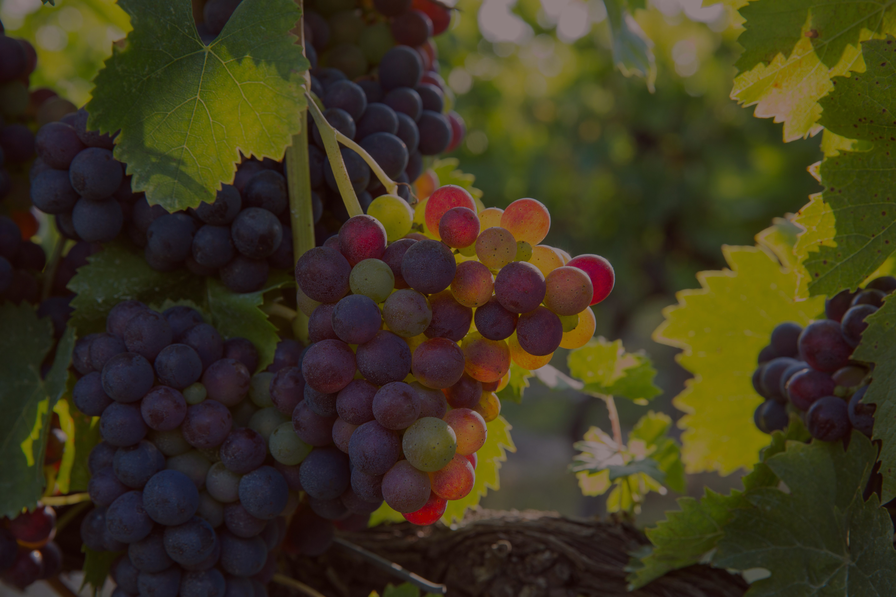
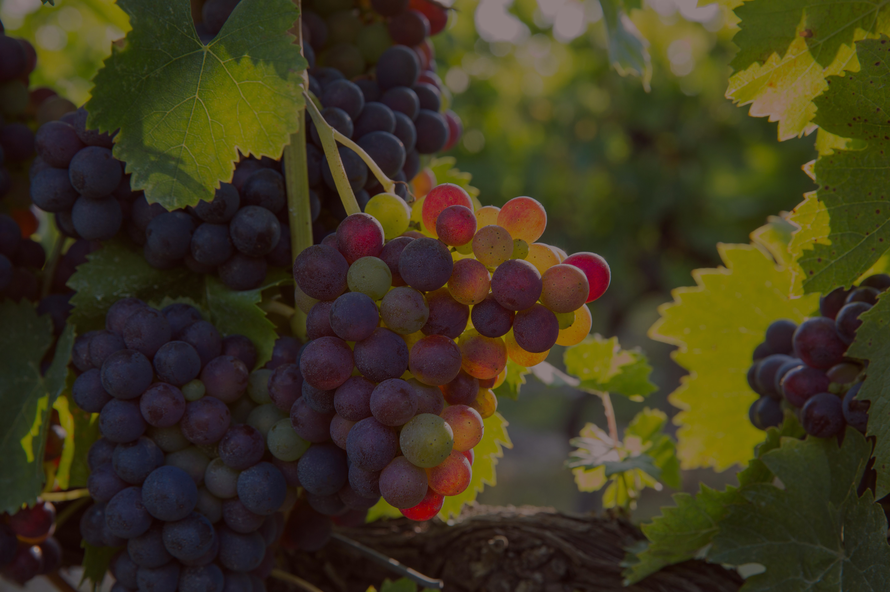

Bass Creek

 

Vores Favoritter
Tryk på de røde pins
Scroll for at se vores sortiment

Vinkort

Hurtig tilgang
Pr. glas 85kr / flaske 450 kr
Mousserende
Livlig, frisk og fylder munden med perlende velsmag, hvor æbler, pærer og mandler blander sig fint med det vinøse. (100% Prosecco)
Hvidvin
Lysegul farve med grønne reflekser, intens aroma af pære og melon. I den fyldige smag; græs, balsamico og citrus. Fin mineralitet. (100% Verdejo)
Lys farve, i duften toner af fersken, melon og lime. Også fersken og passionsfrugt i den let cremede rige smag. Pikant svirp af kernebitterhed i den sprøde frugtsyre finale. (Trebbiano/semillon)
Strågul med en skøn duft af fersken og mango krydret med vanilje fra egefadet. Smagen er fuldt med lækker tropisk frugt i balance med fin syre og en velintegreret fadlagring. (100% chardonnay)
Lys farve med grønt skær og en intens duft af hyldeblomst, citrus og grønne urter. Liflig og frisk i munden med smag af grapefrugt, stikkelsbær og grønne æbler. I eftersmagen frugtsyre og læskende mineralitet. (100% pecorino)
Rødvin
Dyb violet farve, duft af brombær og kirsebær, krydret smagsfylde sat sammen af sorte kirsebær, strejf af peber med runde modne tanniner. (Grenache/syrah)
Mærk violet farve, delikat duft af solbær og brombær og en letrøget tone af sort the. Saftig smag af sorte bær med en læskende frugtsyre og en flot finish af modne tanniner. (100% carmenere)
Rubinrød farve, intens duftpallette af røde og sorte skovbær, lidt sød tobak og en let fadkrydring. fyldig smag med sødmefuld, moden bærfrugt og en lang eftersmag. (tempranillo/syrah)
Mørk voilet med næsten sort dybde. Duft af brombær sorte kirsebær og sødmefulde toner af vanilje og rosiner. Moden sort bærfrugt i smagen med toner af mørk chokolade og kryderier. (Grenache/mouvedre/carignan/syrah)
Tæt rød farve med blålligt skær. Duft af blå blommer, grønne urter og strejf af kanel. I smagen af blåbær, kirsebær og urter, spænstig frugtsyre og rank tanninstruktur. Vinen betegnes Crianza – lagret 12 måneder på egetræsfade. (100% Mencia)
Pr. glas 85kr / flaske 450 kr
Mousserende
Pinot Noir giver vinen rygrad og karakter, Chardonnay tilfører blomst elegance og fedme, Aligote ekstra friskhed og syre. (65% Pinot Noir, 30% Chardonnay,5% Aligote)
Hvidvin
Lysgul farve, aromatisk med eksotisk frugt og tobak i næsen. Sprød, krydret og saftig smag. (100% Grüner Veltliner)
Blomsterduft med røgede undertoner, i smagen abrikos og fersken. Fyldig og med tørhed i den friske eftersmag. (100% Riesling)
Lys strågul med grønne nuancer, acacie og jasmin i duften udover lime og tropisk frugt. Mineralsk i smagen med fint syre indhold. Frugtrig smag med lime, melon og hvid stenfrugt. Fin miniralitet og syreindhold i eftersmagen. (100% albarino)
Lys farve, nuancer af citrus og grønne æbler i duften. Frisk og mineralsk smag med delikat frugtkarakter. (100% Weissburgunder)
Lys klar farve, hvid stenfrugt, pære og urter i duften. Mellemfyldig og med elegant syre, der balancerer en let cremet eftersmag. (100 % Sauvignon Blanc)
Rødvin
Dyb rubinrød farve. En rigd uft af viol og røde bær. Fyldig og afrundet smag med saftige tanniner og fin syre. (100% Sangiovese)
Kirsebærrød farve med violet kant, modne røde bær i duften blandet med krydderurter og toast fra fadlagring. Medium fylde i den frugtrige og krydrede eftersmag. (Syrah/Cabernet/Tempranillo)
Flot mørk ruby i glasset, nærmest brillant. Indbydende i næsen. Vinøs med tydelige noter af sorte kirsebær, mørke bær og fin krydret. Smagen overvældes af en sødmefuld, saftig frugt og en forfriskende moden syre. (100 % Pinot Noir)
Mørkerød farve. I duften mørke bær og krydderi. Sødmefuld frugt og vanilje i den lange eftersmag. (100% Zinfandel)
Rubinrød farve med blåligt skær. Intens duft af røde bær, toast og krydderi fra fadlagring. Forfriskende og saftig smag med frisk syre og modne skovbær. (100% Tempranillo)
Pr. glas 110kr / flaske 600 kr
Mousserende
Tør, Elegant og fyldig champagne.(75% Pinot Noir/25% Chardonnay)
Hvidvin
Nærmest parfumeret med en frisk og sprød aroma af græs og hyld. I smagen modne stikkelsbær og grape. Frisk, tør og delikat. (100% Sauvignon Blanc)
Let gylden farve, bouquet af smør og vanilje fra fadlagringen, fyldig og cremet smag. (100% Chardonnay)
Smuk lys farve med et gylden skær. I duften citrus og hvide blomster. Frisk og mineralsk i smagen med fin syre i afslutning. (100% Chardonnay)
Lys farve, urter og grøn frugt i duften,velstruktureret med fyldig krop, frisk frugt og mineralitet i den lange eftersmag. (100% Sauvignon Blanc)
Lys farve , abrikos, krisebær og mælkechokolade i duften. Smagen er en ren og fyldig, masser af frugt og mineralitet i den lange eftersmag. (100% Risling)
Rødvin
Mørkerød farve, ren og delikat aroma med urter og rød bærfrugt. Smagen let, kølig og mineralsk. (100% Cabernet Franc)
Dybrød farve, duft af solbær, kirsebær og lakrids. Også solbær i den mellemfyldige smag. Saftig og frisk vin med toner af eg fra fadlagring på franske og amerikanske egetræs fade. (82% Shiraz/18% Mourvedre)
Mørk og tæt farve, duft af modne røde bær. Tør og frugtrig smag med tobak, læder og mørk chokolade. Lang og behagelig eftersmag. (100% Sangiovese)
Dybrød farve, risk og imødekommende vin med masser af røde bær, krydderier og lidt vanilje i smagen. Fin dybde og længde i eftersmagen. (Callet/Monte Negre/Fogonau/Syrah)
Strålende violet farve, kompleks duft af krydderier og kakao. Koncentreret og velafbalanceret vin med lang og tæt mineralsk smag. Blød og afrundede tanniner. Lagret på fransk eg i 13 måneder. Ufiltreret. (85% Carmenere, 15% Cabernet Franc)
Smuk granatrød farve, i duften kirsebær, blomme og grønne urter, Delikat og feminin smag med frugtsødme og mørke krydderier. Tør og let vin med fin afsluttende syre. (Spatburgunder/Pinot Noir)
Se resten af vores specialiteter
Rosé
Glas / Flaske
SAN SIMONE, PROSECCO ROSE . . .
Bourgogne
PIPOLI, AGLIANICO . . . . . . . . . . .
Bourgogne
RABL BLAUER ZWEIGELT . . . . . . .
Bourgogne
WHISPERING ANGEL . . . . . . . . . .
Bourgogne
60 kr. / 360 kr.
60 kr. / 360 kr.
60 kr. / 360 kr.
60 kr. / 360 kr.
Sæsonens vin
3 glas for 120 kr. – vælg mellem hvid eller rød
VILLA UFFIZJ, COSTA TOSCANA
Italien
BASS CREEK, LODI, CALIFORNIEN
USA
RIPORTA PECORINO, TERRE DI CHIETI IGP
Italien
KOYLE RESERVA, COLCHAGUA VALLEY
Chile
CELISTIA NEGRO, COSTERS DEL SEGRE
Spanien
DOMAINE ST. MARTIN D’AGEL, FAUGERES
Frankrig
Winedrinks
Pris
PINK ROSE . . . . . . . . . . . . . . . . . . . . . . . .
Rosé, lemonade og frambroise. Frisk og sødmefuld, med en indbydende duft. Vores pink rosé er den ‘evige sommer’. Pyntet med rosenblade.
REDRED ORANGE . . . . . . . . . . . . . . . . . . . .
Rødvin blandet med forfriskende lemonade og en sødmefuld citronsirup. Bringer minder om de varme sommeraftener i spanien. Pyntet med appelsin.
WHITE SANGRIA . . . . . . . . . . . . . . . . . . . . .
Prosecco, passionfrugt, vanilje og lime. Smagsfuld, fyldig og særdeles saftig. Pyntet med passionsfrugt.
75 kr.
75 kr.
75 kr.
Drinks
Pris
APEROL SPRITZ . . . . . . . . . . . . . . . . . . . . .
Prosecco / Aperol / Danskvand
LIMONCELLO SPRITZ . . . . . . . . . . . . . . . . . .
Limoncello / Hvid Vermouth / Citronsaft / Prosecco
HUGU SPRITZ . . . . . . . . . . . . . . . . . . . . . .
Prosecco / Hyldeblomstlikør / Danskvand / Lime
HENDRICK'S GIN . . . . . . . . . . . . . . . . . . . .
Fever Tree tonic / Agurk / Peber
80 kr.
80 kr.
80 kr.
90 kr.
Kult Bar
HVIDVIN
Glas a 8 cl. / Flaske
CARILLON . . . . . . . . . . . . . . . .
Bourgogne
JABOT, CHABLIS . . . . . . . . . . . .
Bourgogne
JADOT, MEURSAULT . . . . . . . . .
Bourgogne
SOUNIT, RULLT 1 CRU . . . . . . . .
Bourgogne
CERILLON, PULIGNY
MONTRACHET . . . . . . . . . . . . .
Bourgogne
100 kr. / 800 kr.
100 kr. / 800 kr.
110 kr. / 850 kr.
110 kr. / 850 kr.
120 kr. / 900 kr.
RØDVIN
Glas a 8 cl. / Flaske
CHATEAU CANTEMERLE, 4 CRU .
Haut-medoc
HACIENDA MONASTERIO . . . . .
Ribera del Duero
ALAN GRASS, AUXEY DURESSE .
Bourgogne
MUGA . . . . . . . . . . . . . . . . .
Rioja Reserva
PIO CESARE, BAROLO . . . . . . .
Piemonte
NUIT ST. GEORGES . . . . . . . . .
Bourgogne
CHATEAU LAGRANGE, 3 CRU . .
Saint Julien
ARLAUD GEVRY CHAMBERTIN . .
Bourgogne
AALTO PS . . . . . . . . . . . . . . .
Ribera del Duero
FLOR DE PINGUS . . . . . . . . . .
Ribera del Duero
ANTONORI, TIGNANELLO . . . . .
Toscana
VEGA SICILIA, VALBUENA . . . . .
Ribera del Duero
ORNELLAIA . . . . . . . . . . . . . .
Bolgheri
OPUS 1 . . . . . . . . . . . . . . . .
Nappa valley
SERRE NUOVE DELLA
ORNELLAIA . . . . . . . . . . . . . .
Bolgheri
100 kr. / 600 kr.
100 kr. / 700 kr.
100 kr. / 800 kr.
100 kr. / 800 kr.
100 kr. / 900 kr.
110 kr. / 950 kr.
110 kr. / 950 kr.
125 kr. / 950 kr.
125 kr. / 950 kr.
125 kr. / 1000 kr.
150 kr. / 1200 kr.
160 kr. / 1300 kr.
190 kr. / 1500 kr.
350 kr. / 2000 kr.
400 kr / 3300 kr
Søde vine
Glas 12 cl.
MOSCATO D’ASTI . . . . . . . . . . . . . . . . . . . .
60 kr.
Glas 12 cl.
PORTVIN . . . . . . . . . . . . . . . . . . . . . . . . . .
75 kr.
Soft Drinks
ANDET
Pris
COCA COLA CLASSIC, PEPSI MAX . . . . . . . . . .
DANSKVAND . . . . . . . . . . . . . . . . . . . . . . .
HYLDEBLOMST, ØKOLOGISK . . . . . . . . . . . . .
25 kr.
25 kr.
25 kr.
ØL
PILSNER . . . . . . . . . . . . . . . . . . . . . . . . . .
HVEDEØL . . . . . . . . . . . . . . . . . . . . . . . . .
45 kr.
45 kr.
ALKOHOLFRI
VIRGIN DRINKS
– PINK ROSE EL. REDRED ORANGE . . . . . . .
MIKKLER WEIRD WEATHER . . . . . . . . . . . . .
FREXINET 0.0 - HVIDVIN EL.RØDVIN . . . . . . .
25 kr.
25 kr.
25 kr.